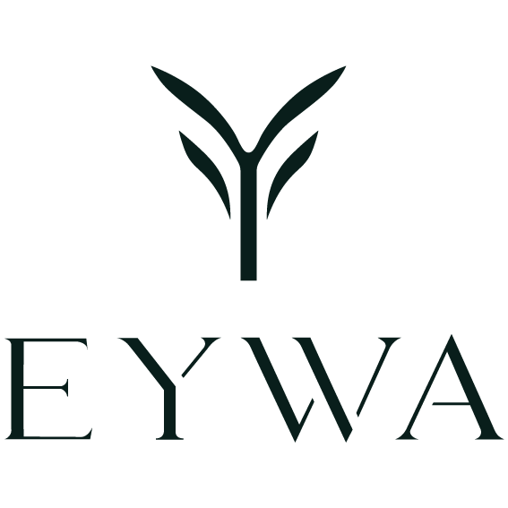

Latte
Espresso et lait onctueux, préparés à la minute, chauds ou glacés.
Le favori des invités
☕ Carte de cafés artisanaux pour chaque événement
Notre carte des boissons complète est incluse dans votre événement : pas de formules à comparer, pas de limite de consommation, pas de frais cachés. Toutes les boissons sont servies chaudes ou glacées.
Espresso et lait onctueux, préparés à la minute, chauds ou glacés.
Le favori des invitésUn espresso intense, du lait chaud et une mousse généreuse.
La rencontre de l’espresso et du chocolat, douce et gourmande.
Un espresso allongé, net et aromatique pour les amateurs de café franc.
Café infusé à froid, doux et rafraîchissant, servi sur glace.
Un latte gourmand où l’espresso rencontre le caramel avec une pointe de sel.
Signature EYWAUne note de vanille douce associée à l’espresso et au lait de votre choix.
Matcha fouetté à la minute avec du lait, chaud ou glacé.
Très demandéUne version délicatement vanillée, douce et fraîche selon le format choisi.
Lait classique ou option végétale pour répondre aux préférences de vos invités.
Personnalisez certaines boissons pour accompagner l’univers de votre événement.
Disponible sur demande pour que chacun profite du coffee bar à son rythme.
Sur demandeUn coffee shop, sur votre lieu
Vous choisissez le format qui vous ressemble, nos baristas préparent chaque boisson à la demande et nous prenons en charge l’installation comme le rangement.
La sélection est construite autour des boissons à base de café et de matcha, préparées par nos baristas selon le format choisi.
Oui, les recettes peuvent être proposées chaudes ou glacées selon la saison et les besoins de votre événement.
Oui. Indiquez vos envies dans le devis, puis nous définissons ensemble les options adaptées à votre événement.
Prêt à composer votre coffee bar ?